lorenz_partial_additive_uniformLC_p30_obsnoise005_nd45_init15_autodim_lc1em4__validation_3x3x3_sweepProject: Lorenz_INDpartial_NDInitSweep_autodim_D1_NormTrue__JacobianODE
Launched: 2026-04-23T06:45:39Z
Completed: 2026-04-23T12:50:25Z
Outcome: complete_clean
Git: latent-JacobianODE @ 0e2315c
Expected runs: 27
lorenz_partial_additive_uniformLC_p30_obsnoise005_nd45_init15_autodim_lc1em4__validation_3x3x3_sweepDescription
Lorenz partial additive coupling, obs_noise=0.05, n_delays=45, prediction_steps=30, traj_init_steps=15, splitmode (most_recent traj + uniform recon), final_perm_identity=true, init_pca_basis=false, fixed LC=1e-4 (winner from prior LC sweep). 27-run validation grid: 3 obs_noise_scale × 3 recon_w × 3 lpl_w.
Hypothesis
Same hypotheses as obsnoise001 companion, at higher data noise. At noise=0.05 the data noise budget is already large, so: - obs_noise_scale's relative magnitudes are smaller (0.03 ≈ 0.6× data noise here vs 3× at noise=0.01) - recon scale mismatch may be smaller too (uniform recon includes noisier early steps that look more like the most_recent traj) - lpl might matter more because the latent has more noise to suppress
Success criteria
Swept axes (4): model.n_target_dims_pca_cum_var, training.lightning.latent_prediction_loss_weight, training.lightning.obs_noise_scale, training.lightning.reconstruction_loss_weight
Chosen run (by best_traj_loss): qu4ds94e — traj_loss=0.00546, MASE=0.7776, R²=0.9848, LC loss=0.336, epoch=102.0
Swept-axis values at chosen run: model.n_target_dims_pca_cum_var=0.990085 · training.lightning.latent_prediction_loss_weight=1 · training.lightning.obs_noise_scale=0 · training.lightning.reconstruction_loss_weight=3
Runs analyzed: 27 (expected 27)
| run_idx | run_id | model.n_target_dims_pca_cum_var |
training.lightning.latent_prediction_loss_weight |
training.lightning.obs_noise_scale |
training.lightning.reconstruction_loss_weight |
best_traj_loss | best_MASE | R² | LC loss | epoch |
|---|---|---|---|---|---|---|---|---|---|---|
| 8 | qu4ds94e |
0.990085 | 1 | 0 | 3 | 0.00546 | 0.7776 | 0.9848 | 0.336 | 102.0 |
| 2 | mr1gx45i |
0.990085 | 1 | 0 | 0.3 | 0.00625 | 0.8169 | 0.9827 | 0.380 | 88.0 |
| 17 | u0uaiuyi |
0.990085 | 1 | 0.003 | 3 | 0.00709 | 0.8411 | 0.9800 | 0.801 | 43.0 |
| 5 | ls7ye16c |
0.990085 | 1 | 0 | 1 | 0.00745 | 0.8423 | 0.9791 | 0.243 | 55.0 |
| 16 | cmobf47o |
0.990085 | 0.1 | 0.003 | 3 | 0.01108 | 0.9456 | 0.9692 | 0.318 | 29.0 |
| 7 | a8n8ep67 |
0.990085 | 0.1 | 0 | 3 | 0.01227 | 0.9615 | 0.9659 | 0.372 | 24.0 |
| 4 | ch6g6vy8 |
0.990085 | 0.1 | 0 | 1 | 0.01269 | 1.0279 | 0.9644 | 0.331 | 24.0 |
| 13 | 8cvnlawz |
0.990085 | 0.1 | 0.003 | 1 | 0.01389 | 1.0012 | 0.9609 | 0.331 | 33.0 |
| 10 | i7i5mw7b |
0.990085 | 0.1 | 0.003 | 0.3 | 0.01403 | 1.0212 | 0.9606 | 0.303 | 29.0 |
| 11 | cqlq0f0j |
0.990085 | 1 | 0.003 | 0.3 | 0.01667 | 1.1854 | 0.9540 | 0.846 | 16.0 |
| 1 | rphrz03k |
0.990085 | 0.1 | 0 | 0.3 | 0.01716 | 1.0934 | 0.9524 | 0.211 | 25.0 |
| 14 | lt9qaamq |
0.990085 | 1 | 0.003 | 1 | 0.01803 | 1.1303 | 0.9502 | 1.317 | 15.0 |
| 22 | 60gsmyhc |
0.990085 | 0.1 | 0.03 | 1 | 0.04760 | 1.6542 | 0.8666 | 0.517 | 35.0 |
| 25 | 5mat0lf3 |
0.990085 | 0.1 | 0.03 | 3 | 0.09049 | 2.6021 | 0.7512 | 0.193 | — |
| 26 | sauy8gi1 |
0.990085 | 1 | 0.03 | 3 | 0.09075 | 2.9744 | 0.7506 | 0.052 | — |
| 23 | s9z8yda4 |
0.990085 | 1 | 0.03 | 1 | 0.09239 | 3.0031 | 0.7454 | 0.009 | 2.0 |
| 19 | 66bg8vvo |
0.990085 | 0.1 | 0.03 | 0.3 | 0.09678 | 3.1270 | 0.7339 | 0.194 | — |
| 20 | 2zai4emo |
0.990085 | 1 | 0.03 | 0.3 | 0.09873 | 3.1748 | 0.7286 | 0.013 | — |
| 0 | nx0wivgq |
0.990085 | 0 | 0 | 0.3 | 0.10286 | 3.2115 | 0.7170 | 0.378 | — |
| 24 | mqofpwu5 |
0.990085 | 0 | 0.03 | 3 | 0.11594 | 3.3663 | 0.6812 | 0.552 | — |
| 3 | e64oorx2 |
0.990085 | 0 | 0 | 1 | 0.17384 | 4.1892 | 0.5241 | 0.158 | — |
| 21 | 7exlk29d |
0.990085 | 0 | 0.03 | 1 | 0.25139 | 4.6887 | 0.3102 | 0.556 | — |
| 6 | iog032cq |
0.990085 | 0 | 0 | 3 | 0.59359 | 7.2039 | -0.6285 | 0.096 | — |
| 9 | mk3e9xtq |
0.990085 | 0 | 0.003 | 0.3 | 0.96102 | 8.8910 | -1.6391 | 0.167 | — |
| 12 | onkgihqh |
0.990085 | 0 | 0.003 | 1 | 1.79777 | 11.9981 | -3.9414 | 0.062 | — |
| 18 | bhdud5i4 |
0.990085 | 0 | 0.03 | 0.3 | 2.59525 | 11.7846 | -6.1236 | 0.467 | — |
| 15 | iq4e1svv |
0.990085 | 0 | 0.003 | 3 | 7.33744 | 22.5502 | -19.1931 | 0.155 | — |
obs_noise_scale| obs_noise_scale | Best LC weight | Best traj loss | MASE at best | R² | LC loss | epoch |
|---|---|---|---|---|---|---|
| 0.0 | 1.0e-04 | 0.00546 | 0.7776 | 0.9848 | 0.336 | 102.0 |
| 0.003 | 1.0e-04 | 0.00709 | 0.8411 | 0.9800 | 0.801 | 43.0 |
| 0.03 | 1.0e-04 | 0.04760 | 1.6542 | 0.8666 | 0.517 | 35.0 |
| Criterion | Verdict | Note |
|---|---|---|
| All 27 runs train without divergence | Unknown | |
| Best val traj_loss is at most 2x worse than the winner's 5.50e-3 | Unknown | |
| Best cell has selection_LC <= sqrt(n_target_dims) (passes C2) | Unknown | |
| Best cell's optimal recon_w / lpl_w consistent with obsnoise001 companion (or interpretable difference) | Unknown |
Automated verdicts use simple numeric-threshold parsing and may mis-classify qualitative criteria. The Discussion section below takes precedence.
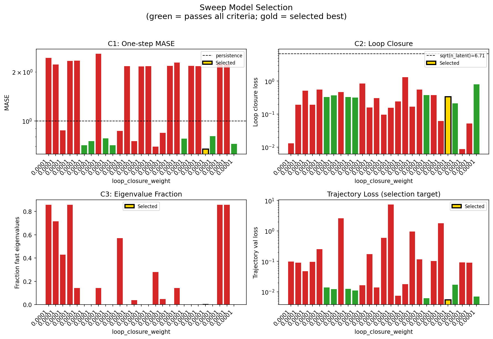
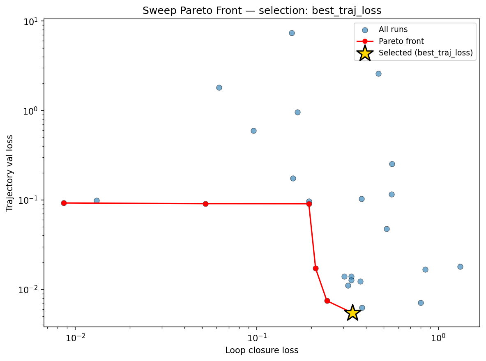
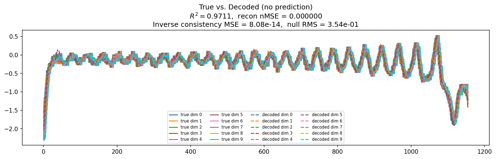
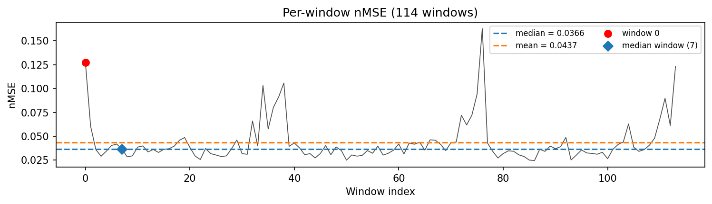
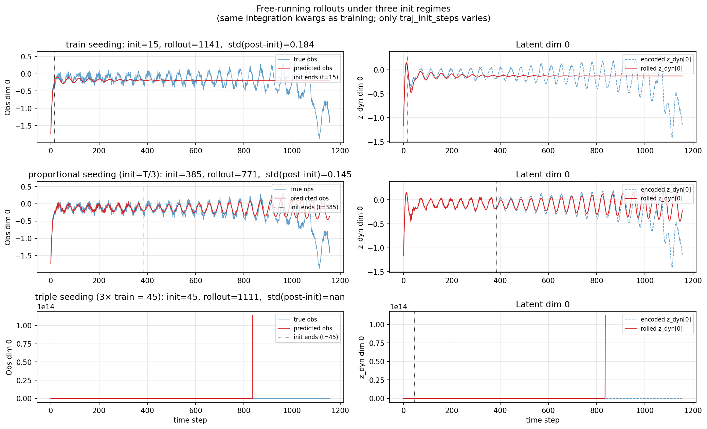
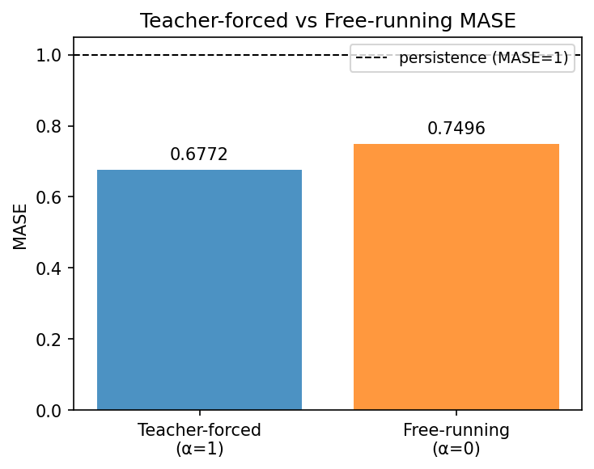
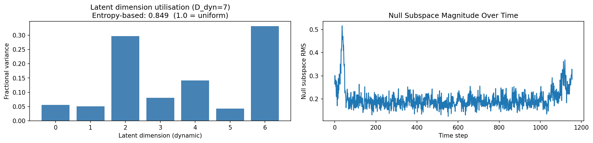
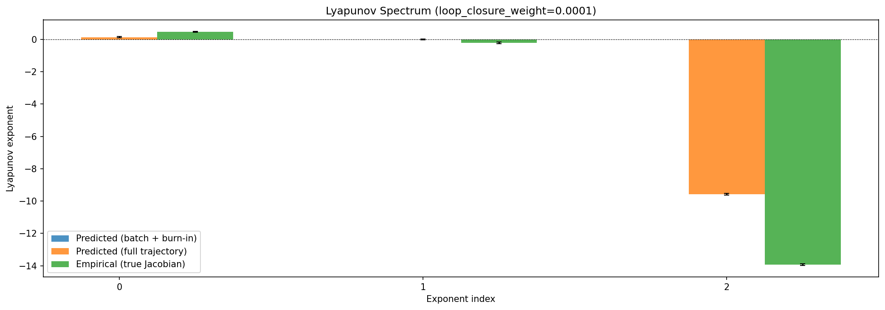
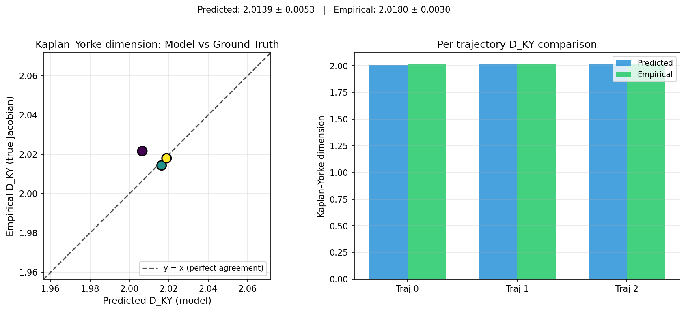
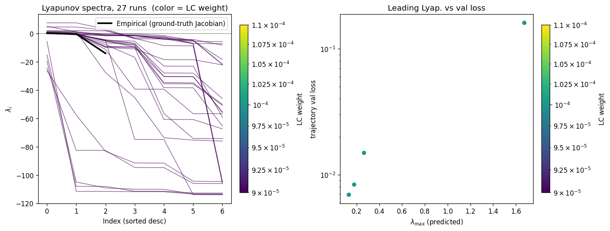
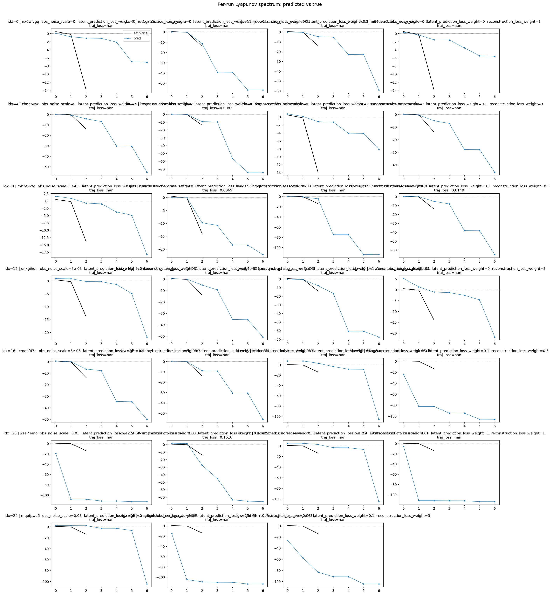
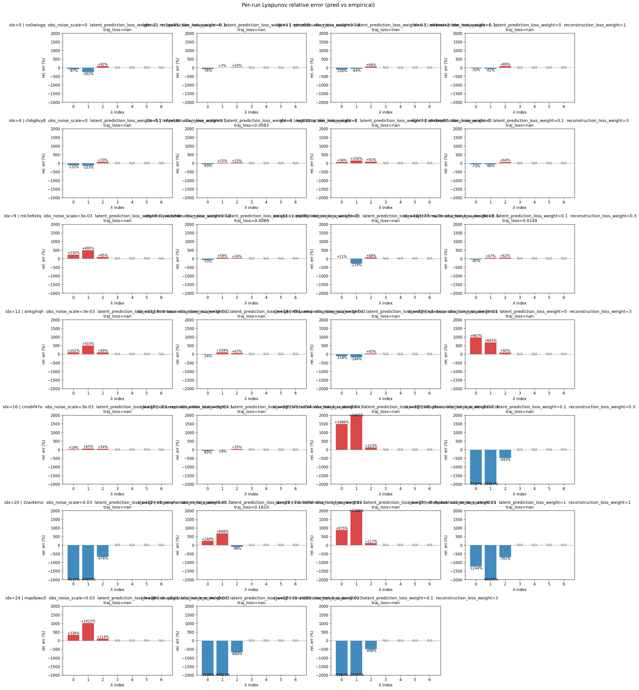
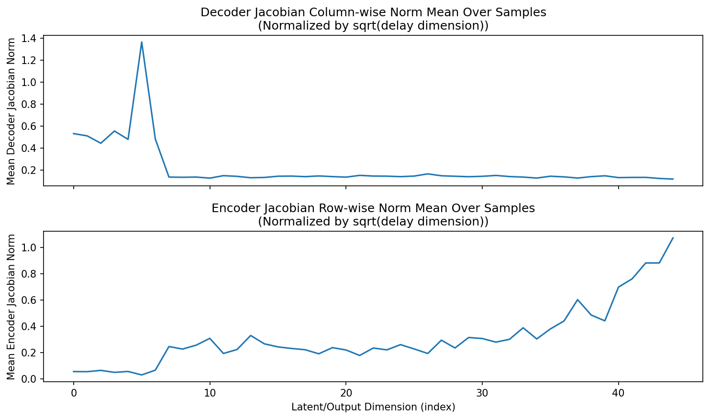
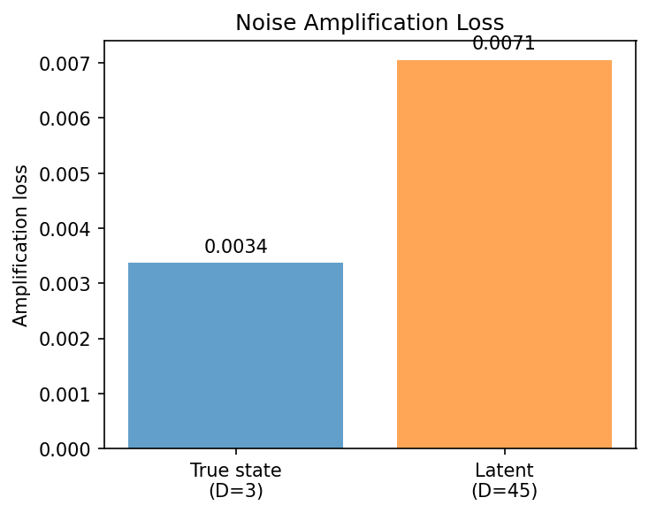
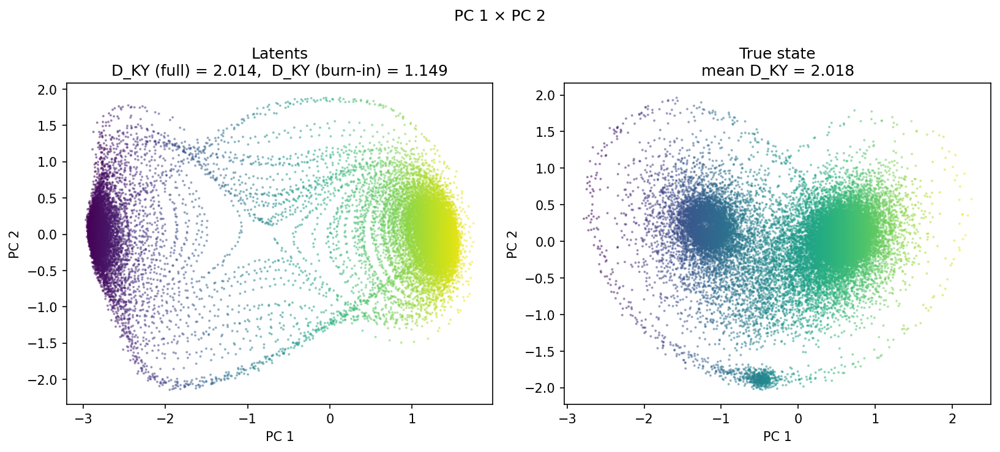
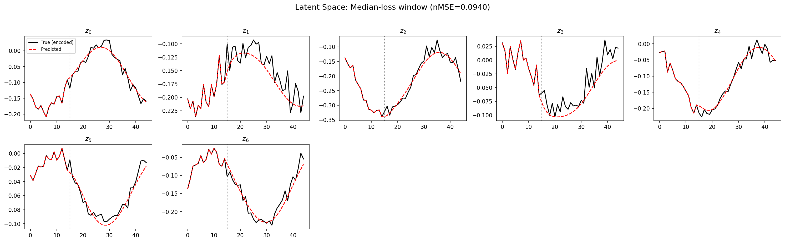
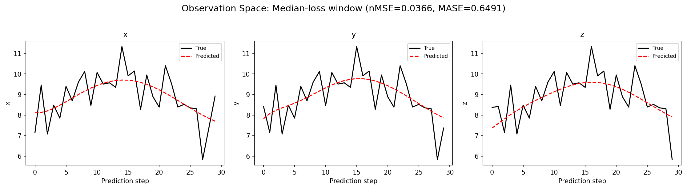
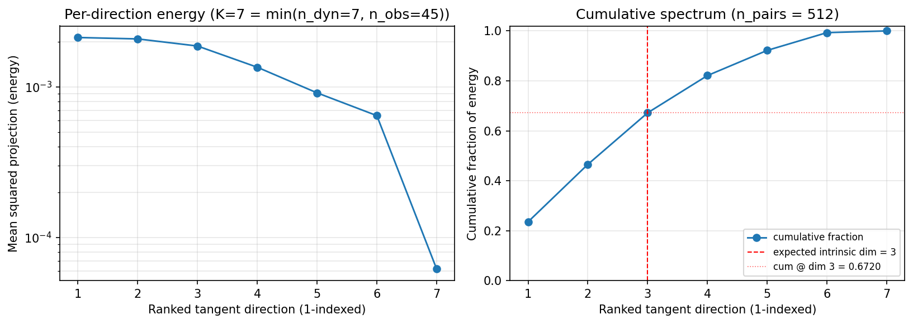
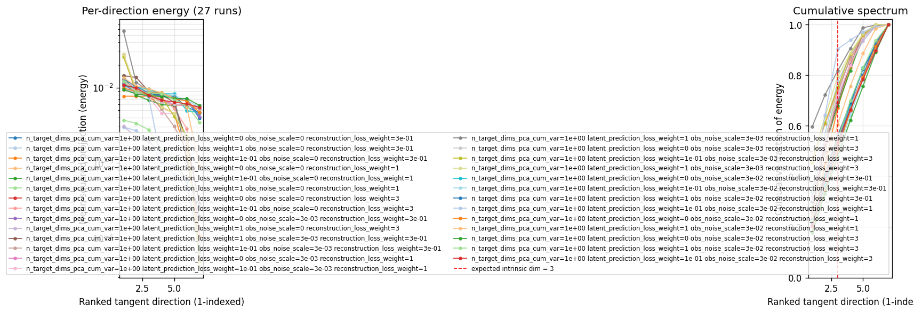
(to be written)
run_analytics stdoutrun_analyticsNo run_id provided — selecting best run from group 'lorenz_partial_additive_uniformLC_p30_obsnoise005_nd45_init15_autodim_lc1em4__validation_3x3x3_sweep' ...
Found 27 total runs in JacobianODE/Lorenz_INDpartial_NDInitSweep_autodim_D1_NormTrue__JacobianODE (group=lorenz_partial_additive_uniformLC_p30_obsnoise005_nd45_init15_autodim_lc1em4__validation_3x3x3_sweep)
All runs (state, loop_closure_weight, tangent_entropy_weight, kl_dyn_weight):
nx0wivgq: state=finished, lc=0.0001, te=0.0, kl_dyn=0.0
mr1gx45i: state=finished, lc=0.0001, te=0.0, kl_dyn=0.0
rphrz03k: state=finished, lc=0.0001, te=0.0, kl_dyn=0.0
e64oorx2: state=finished, lc=0.0001, te=0.0, kl_dyn=0.0
ch6g6vy8: state=finished, lc=0.0001, te=0.0, kl_dyn=0.0
ls7ye16c: state=finished, lc=0.0001, te=0.0, kl_dyn=0.0
iog032cq: state=finished, lc=0.0001, te=0.0, kl_dyn=0.0
a8n8ep67: state=finished, lc=0.0001, te=0.0, kl_dyn=0.0
mk3e9xtq: state=finished, lc=0.0001, te=0.0, kl_dyn=0.0
qu4ds94e: state=finished, lc=0.0001, te=0.0, kl_dyn=0.0
cqlq0f0j: state=finished, lc=0.0001, te=0.0, kl_dyn=0.0
i7i5mw7b: state=finished, lc=0.0001, te=0.0, kl_dyn=0.0
onkgihqh: state=finished, lc=0.0001, te=0.0, kl_dyn=0.0
8cvnlawz: state=finished, lc=0.0001, te=0.0, kl_dyn=0.0
lt9qaamq: state=finished, lc=0.0001, te=0.0, kl_dyn=0.0
iq4e1svv: state=finished, lc=0.0001, te=0.0, kl_dyn=0.0
cmobf47o: state=finished, lc=0.0001, te=0.0, kl_dyn=0.0
u0uaiuyi: state=finished, lc=0.0001, te=0.0, kl_dyn=0.0
bhdud5i4: state=finished, lc=0.0001, te=0.0, kl_dyn=0.0
66bg8vvo: state=finished, lc=0.0001, te=0.0, kl_dyn=0.0
2zai4emo: state=finished, lc=0.0001, te=0.0, kl_dyn=0.0
60gsmyhc: state=finished, lc=0.0001, te=0.0, kl_dyn=0.0
7exlk29d: state=finished, lc=0.0001, te=0.0, kl_dyn=0.0
s9z8yda4: state=finished, lc=0.0001, te=0.0, kl_dyn=0.0
mqofpwu5: state=finished, lc=0.0001, te=0.0, kl_dyn=0.0
sauy8gi1: state=finished, lc=0.0001, te=0.0, kl_dyn=0.0
5mat0lf3: state=finished, lc=0.0001, te=0.0, kl_dyn=0.0
slurm_timeout_min not found in any run config — falling back to 180 min
Including nx0wivgq (lc=0.0001): use_all_runs=True (state=finished)
Including mr1gx45i (lc=0.0001): use_all_runs=True (state=finished)
Including rphrz03k (lc=0.0001): use_all_runs=True (state=finished)
Including e64oorx2 (lc=0.0001): use_all_runs=True (state=finished)
Including ch6g6vy8 (lc=0.0001): use_all_runs=True (state=finished)
Including ls7ye16c (lc=0.0001): use_all_runs=True (state=finished)
Including iog032cq (lc=0.0001): use_all_runs=True (state=finished)
Including a8n8ep67 (lc=0.0001): use_all_runs=True (state=finished)
Including mk3e9xtq (lc=0.0001): use_all_runs=True (state=finished)
Including qu4ds94e (lc=0.0001): use_all_runs=True (state=finished)
Including cqlq0f0j (lc=0.0001): use_all_runs=True (state=finished)
Including i7i5mw7b (lc=0.0001): use_all_runs=True (state=finished)
Including onkgihqh (lc=0.0001): use_all_runs=True (state=finished)
Including 8cvnlawz (lc=0.0001): use_all_runs=True (state=finished)
Including lt9qaamq (lc=0.0001): use_all_runs=True (state=finished)
Including iq4e1svv (lc=0.0001): use_all_runs=True (state=finished)
Including cmobf47o (lc=0.0001): use_all_runs=True (state=finished)
Including u0uaiuyi (lc=0.0001): use_all_runs=True (state=finished)
Including bhdud5i4 (lc=0.0001): use_all_runs=True (state=finished)
Including 66bg8vvo (lc=0.0001): use_all_runs=True (state=finished)
Including 2zai4emo (lc=0.0001): use_all_runs=True (state=finished)
Including 60gsmyhc (lc=0.0001): use_all_runs=True (state=finished)
Including 7exlk29d (lc=0.0001): use_all_runs=True (state=finished)
Including s9z8yda4 (lc=0.0001): use_all_runs=True (state=finished)
Including mqofpwu5 (lc=0.0001): use_all_runs=True (state=finished)
Including sauy8gi1 (lc=0.0001): use_all_runs=True (state=finished)
Including 5mat0lf3 (lc=0.0001): use_all_runs=True (state=finished)
Found 27 effectively-done sweep runs:
loop_closure_weight=0.0001, tangent_entropy_weight=0.0, kl_dyn_weight=0.0 -> run_id=2zai4emo
loop_closure_weight=0.0001, tangent_entropy_weight=0.0, kl_dyn_weight=0.0 -> run_id=5mat0lf3
loop_closure_weight=0.0001, tangent_entropy_weight=0.0, kl_dyn_weight=0.0 -> run_id=60gsmyhc
loop_closure_weight=0.0001, tangent_entropy_weight=0.0, kl_dyn_weight=0.0 -> run_id=66bg8vvo
loop_closure_weight=0.0001, tangent_entropy_weight=0.0, kl_dyn_weight=0.0 -> run_id=7exlk29d
loop_closure_weight=0.0001, tangent_entropy_weight=0.0, kl_dyn_weight=0.0 -> run_id=8cvnlawz
loop_closure_weight=0.0001, tangent_entropy_weight=0.0, kl_dyn_weight=0.0 -> run_id=a8n8ep67
loop_closure_weight=0.0001, tangent_entropy_weight=0.0, kl_dyn_weight=0.0 -> run_id=bhdud5i4
loop_closure_weight=0.0001, tangent_entropy_weight=0.0, kl_dyn_weight=0.0 -> run_id=ch6g6vy8
loop_closure_weight=0.0001, tangent_entropy_weight=0.0, kl_dyn_weight=0.0 -> run_id=cmobf47o
loop_closure_weight=0.0001, tangent_entropy_weight=0.0, kl_dyn_weight=0.0 -> run_id=cqlq0f0j
loop_closure_weight=0.0001, tangent_entropy_weight=0.0, kl_dyn_weight=0.0 -> run_id=e64oorx2
loop_closure_weight=0.0001, tangent_entropy_weight=0.0, kl_dyn_weight=0.0 -> run_id=i7i5mw7b
loop_closure_weight=0.0001, tangent_entropy_weight=0.0, kl_dyn_weight=0.0 -> run_id=iog032cq
loop_closure_weight=0.0001, tangent_entropy_weight=0.0, kl_dyn_weight=0.0 -> run_id=iq4e1svv
loop_closure_weight=0.0001, tangent_entropy_weight=0.0, kl_dyn_weight=0.0 -> run_id=ls7ye16c
loop_closure_weight=0.0001, tangent_entropy_weight=0.0, kl_dyn_weight=0.0 -> run_id=lt9qaamq
loop_closure_weight=0.0001, tangent_entropy_weight=0.0, kl_dyn_weight=0.0 -> run_id=mk3e9xtq
loop_closure_weight=0.0001, tangent_entropy_weight=0.0, kl_dyn_weight=0.0 -> run_id=mqofpwu5
loop_closure_weight=0.0001, tangent_entropy_weight=0.0, kl_dyn_weight=0.0 -> run_id=mr1gx45i
loop_closure_weight=0.0001, tangent_entropy_weight=0.0, kl_dyn_weight=0.0 -> run_id=nx0wivgq
loop_closure_weight=0.0001, tangent_entropy_weight=0.0, kl_dyn_weight=0.0 -> run_id=onkgihqh
loop_closure_weight=0.0001, tangent_entropy_weight=0.0, kl_dyn_weight=0.0 -> run_id=qu4ds94e
loop_closure_weight=0.0001, tangent_entropy_weight=0.0, kl_dyn_weight=0.0 -> run_id=rphrz03k
loop_closure_weight=0.0001, tangent_entropy_weight=0.0, kl_dyn_weight=0.0 -> run_id=s9z8yda4
loop_closure_weight=0.0001, tangent_entropy_weight=0.0, kl_dyn_weight=0.0 -> run_id=sauy8gi1
loop_closure_weight=0.0001, tangent_entropy_weight=0.0, kl_dyn_weight=0.0 -> run_id=u0uaiuyi
n_dims=45, n_latent=45, n_dyn=7, dt=0.0150
run=2zai4emo: DiagnosticMetrics(one_step_mase=2.4360949993133545, loop_closure_loss=0.013117926195263863, fast_eigenvalue_fraction=0.8571428656578064, trajectory_val_loss=0.09873409569263458) (from W&B history)
run=5mat0lf3: DiagnosticMetrics(one_step_mase=2.219895601272583, loop_closure_loss=0.1933271437883377, fast_eigenvalue_fraction=0.7142857313156128, trajectory_val_loss=0.09048885107040405) (from W&B history)
run=60gsmyhc: DiagnosticMetrics(one_step_mase=0.8754795789718628, loop_closure_loss=0.5172172784805298, fast_eigenvalue_fraction=0.4285714328289032, trajectory_val_loss=0.04759868234395981) (from W&B history)
run=66bg8vvo: DiagnosticMetrics(one_step_mase=2.3345680236816406, loop_closure_loss=0.19352857768535614, fast_eigenvalue_fraction=0.8571428656578064, trajectory_val_loss=0.09678389877080917) (from W&B history)
run=7exlk29d: DiagnosticMetrics(one_step_mase=2.338701009750366, loop_closure_loss=0.5559774041175842, fast_eigenvalue_fraction=0.1428571492433548, trajectory_val_loss=0.2513854205608368) (from W&B history)
run=8cvnlawz: DiagnosticMetrics(one_step_mase=0.7091180086135864, loop_closure_loss=0.33120521903038025, fast_eigenvalue_fraction=0.0, trajectory_val_loss=0.013893118128180504) (from W&B history)
run=a8n8ep67: DiagnosticMetrics(one_step_mase=0.7533082962036133, loop_closure_loss=0.3722366690635681, fast_eigenvalue_fraction=0.0, trajectory_val_loss=0.012269080616533756) (from W&B history)
run=bhdud5i4: DiagnosticMetrics(one_step_mase=2.5762674808502197, loop_closure_loss=0.46685370802879333, fast_eigenvalue_fraction=0.1428571492433548, trajectory_val_loss=2.595248222351074) (from W&B history)
run=ch6g6vy8: DiagnosticMetrics(one_step_mase=0.7837777733802795, loop_closure_loss=0.3305754065513611, fast_eigenvalue_fraction=0.0, trajectory_val_loss=0.012691613286733627) (from W&B history)
run=cmobf47o: DiagnosticMetrics(one_step_mase=0.7109522819519043, loop_closure_loss=0.3180679380893707, fast_eigenvalue_fraction=0.0, trajectory_val_loss=0.011075166054069996) (from W&B history)
run=cqlq0f0j: DiagnosticMetrics(one_step_mase=0.8696073293685913, loop_closure_loss=0.8461429476737976, fast_eigenvalue_fraction=0.5714285969734192, trajectory_val_loss=0.016667645424604416) (from W&B history)
run=e64oorx2: DiagnosticMetrics(one_step_mase=2.1650121212005615, loop_closure_loss=0.1581691950559616, fast_eigenvalue_fraction=0.0, trajectory_val_loss=0.17383629083633423) (from W&B history)
run=i7i5mw7b: DiagnosticMetrics(one_step_mase=0.7535693645477295, loop_closure_loss=0.30259373784065247, fast_eigenvalue_fraction=0.038928572088479996, trajectory_val_loss=0.014027570374310017) (from W&B history)
run=iog032cq: DiagnosticMetrics(one_step_mase=2.1599626541137695, loop_closure_loss=0.09590677917003632, fast_eigenvalue_fraction=0.0, trajectory_val_loss=0.5935933589935303) (from W&B history)
run=iq4e1svv: DiagnosticMetrics(one_step_mase=2.1646103858947754, loop_closure_loss=0.15538303554058075, fast_eigenvalue_fraction=0.0, trajectory_val_loss=7.337440013885498) (from W&B history)
run=ls7ye16c: DiagnosticMetrics(one_step_mase=0.6976839303970337, loop_closure_loss=0.24313640594482422, fast_eigenvalue_fraction=0.279285728931427, trajectory_val_loss=0.007446702569723129) (from W&B history)
run=lt9qaamq: DiagnosticMetrics(one_step_mase=0.8451600670814514, loop_closure_loss=1.3170346021652222, fast_eigenvalue_fraction=0.04821428656578064, trajectory_val_loss=0.018028603866696358) (from W&B history)
run=mk3e9xtq: DiagnosticMetrics(one_step_mase=2.1761395931243896, loop_closure_loss=0.1674010455608368, fast_eigenvalue_fraction=0.0, trajectory_val_loss=0.9610229730606079) (from W&B history)
run=mqofpwu5: DiagnosticMetrics(one_step_mase=2.2795989513397217, loop_closure_loss=0.5516365170478821, fast_eigenvalue_fraction=0.1428571492433548, trajectory_val_loss=0.115936279296875) (from W&B history)
run=mr1gx45i: DiagnosticMetrics(one_step_mase=0.7808684706687927, loop_closure_loss=0.38030901551246643, fast_eigenvalue_fraction=0.0, trajectory_val_loss=0.006253487896174192) (from W&B history)
run=nx0wivgq: DiagnosticMetrics(one_step_mase=2.1709353923797607, loop_closure_loss=0.3775634765625, fast_eigenvalue_fraction=0.0, trajectory_val_loss=0.10286027938127518) (from W&B history)
run=onkgihqh: DiagnosticMetrics(one_step_mase=2.1679232120513916, loop_closure_loss=0.06197051703929901, fast_eigenvalue_fraction=0.0, trajectory_val_loss=1.797768235206604) (from W&B history)
run=qu4ds94e: DiagnosticMetrics(one_step_mase=0.6717880964279175, loop_closure_loss=0.33629414439201355, fast_eigenvalue_fraction=0.0, trajectory_val_loss=0.005459796171635389) (from W&B history)
run=rphrz03k: DiagnosticMetrics(one_step_mase=0.8077051043510437, loop_closure_loss=0.21078620851039886, fast_eigenvalue_fraction=0.0, trajectory_val_loss=0.01716083101928234) (from W&B history)
run=s9z8yda4: DiagnosticMetrics(one_step_mase=2.2446839809417725, loop_closure_loss=0.008632775396108627, fast_eigenvalue_fraction=0.8571428656578064, trajectory_val_loss=0.0923885628581047) (from W&B history)
run=sauy8gi1: DiagnosticMetrics(one_step_mase=2.2134625911712646, loop_closure_loss=0.05201994255185127, fast_eigenvalue_fraction=0.8571428656578064, trajectory_val_loss=0.09075377136468887) (from W&B history)
run=u0uaiuyi: DiagnosticMetrics(one_step_mase=0.7233379483222961, loop_closure_loss=0.8008866906166077, fast_eigenvalue_fraction=0.0, trajectory_val_loss=0.007085119374096394) (from W&B history)
Ranking method: best_traj_loss
Best run ID: qu4ds94e
Best loop_closure_weight: 0.0001
Best tangent_entropy_weight: 0.0
Best kl_dyn_weight: 0.0
Best traj loss: 0.005460
Criteria applied: ['C1', 'C2', 'C3']
Surviving: 8 / 27
Auto-selected run_id: qu4ds94e
======================================================================
PARETO FRONTIER RUNS (6 runs)
======================================================================
Run ID LC Loss Traj Val Loss
------------ -------------- --------------
s9z8yda4 0.008633 0.092389
sauy8gi1 0.052020 0.090754
5mat0lf3 0.193327 0.090489
rphrz03k 0.210786 0.017161
ls7ye16c 0.243136 0.007447
qu4ds94e 0.336294 0.005460 <-- selected
======================================================================
RANKING METHOD COMPARISON (over 8 survivors)
======================================================================
Method Run ID LC Loss Traj Val Loss
---------------------- ------------ -------------- --------------
best_traj_loss qu4ds94e 0.336294 0.005460 <-- active
pareto_knee cmobf47o 0.318068 0.011075
geo_rank qu4ds94e 0.336294 0.005460
minimax_rank cmobf47o 0.318068 0.011075
geo_log_score qu4ds94e 0.336294 0.005460
minimax_log_score qu4ds94e 0.336294 0.005460
======================================================================
Loading run qu4ds94e from JacobianODE/Lorenz_INDpartial_NDInitSweep_autodim_D1_NormTrue__JacobianODE ...
Train dataset shape: torch.Size([24442, 45, 45])
Validation dataset shape: torch.Size([7777, 45, 45])
Test dataset shape: torch.Size([3333, 45, 45])
Train trajectories dataset shape: torch.Size([22, 1156, 45])
Validation trajectories dataset shape: torch.Size([7, 1156, 45])
Test trajectories dataset shape: torch.Size([3, 1156, 45])
Loading checkpoint epoch=102-step=20600.ckpt...
Computing reconstruction ...
Computing MASE ...
Teacher-forced MASE: 0.6772
Free-running MASE: 0.7496
Computing latent utilization ...
Entropy-based utilization: 0.849
Null subspace mean RMS: 2.037045e-01
Computing Lyapunov exponents ...
Computing full-trajectory Lyapunov (3 test trajs, T=1156) ...
Predicted Lyapunov exponents (batch+burn-in, 128 windowed trajs):
λ_1 = +nan ± nan
λ_2 = +nan ± nan
λ_3 = +nan ± nan
λ_4 = +nan ± nan
λ_5 = +nan ± nan
λ_6 = +nan ± nan
λ_7 = +nan ± nan
Predicted Lyapunov exponents (full-length, 3 test trajs):
λ_1 = +0.1390 ± 0.0454
λ_2 = -0.0056 ± 0.0195
λ_3 = -9.5809 ± 0.0554
λ_4 = -10.3499 ± 0.1011
λ_5 = -19.0176 ± 0.0536
λ_6 = -19.0573 ± 0.0282
λ_7 = -22.6168 ± 0.0539
Empirical Lyapunov exponents (mean ± std):
λ_1 = +0.4677 ± 0.0259
λ_2 = -0.2173 ± 0.0549
λ_3 = -13.9174 ± 0.0513
Mean KY dim (predicted): 2.014 ± 0.005
Mean KY dim (empirical): 2.018 ± 0.003
Mean KY dim (burn-in): 1.149 ± 0.722
Computing prediction windows ...
Windows: 114 — nMSE min=0.0247, median=0.0366, mean=0.0437, max=0.1627
Computing long-trajectory free-running rollouts ...
Computing encoder/decoder Jacobians ...
encoder_jacobian: (128, 45, 45)
decoder_jacobian: (128, 45, 45)
Computing amplification loss ...
Amplification loss — True state: 0.003366
Amplification loss — Latent: 0.007055
Computing tangent space spectrum ...